Cátedra 28: Síntesis Final y Movimiento Browniano
Última clase del curso. Se cierra el tema de transiciones de fase (punto triple, diagrama $P$-$T$, el caso anómalo del helio) y se dedica el resto a una introducción extensa al movimiento browniano: su historia, desde Robert Brown hasta el año milagroso de Einstein, y la explicación física que conecta la fuerza de Stokes, la presión osmótica y la ley de Fick con la relación de difusión de Einstein.
Temas que cubre
- Cierre de transiciones de fase: el punto triple como intersección de las tres curvas de coexistencia (sólido-líquido-gas)
- El diagrama $P$-$T$ genérico y el caso especial del helio, sin punto triple sólido-líquido-gas clásico por efectos cuánticos
- Historia del movimiento browniano: Robert Brown (1827), Bachelier (1900), Sutherland, hasta Einstein (1905, "año milagroso")
- La hipótesis de Stokes: fuerza de arrastre sobre una partícula grande moviéndose en un fluido viscoso, $F=6\pi\eta r v$
- La presión osmótica reinterpretada como una fuerza por unidad de volumen sobre las partículas suspendidas
- La ley de Fick y la combinación de ambos ingredientes en la relación de Einstein para el coeficiente de difusión
Conceptos clave
Punto triple
Es el único punto $(T_t,P_t)$ donde coexisten simultáneamente las tres fases (sólido, líquido, gas): la intersección de las tres curvas de coexistencia de pares de fases. El helio es la excepción notable: su punto crítico/triple está a temperatura tan baja que las fluctuaciones cuánticas destruyen la fase sólida clásica, y solo se observa líquido y gas (más una transición superfluida).
De Robert Brown a Einstein
Brown (1827) observó el movimiento errático de granos de polen al microscopio y descartó —tras experimentos cuidadosos con polen de hasta 40 años de antigüedad y partículas inorgánicas— que fuera un fenómeno vital. El problema quedó abierto casi 80 años: Bachelier (1900) inventó esencialmente el cálculo estocástico en su tesis (caminata aleatoria), pero fue rechazada por Poincaré por "demasiado especulativa"; Sutherland llegó a resultados similares casi simultáneamente con Einstein, sin el mismo reconocimiento.
Fuerza de Stokes y presión osmótica
Einstein combinó dos ingredientes de orígenes distintos: la fuerza de arrastre de Stokes $F=6\pi\eta r v$ sobre una esfera moviéndose en un fluido viscoso, y la presión osmótica reinterpretada como una fuerza efectiva sobre las partículas suspendidas, ligada al gradiente de su concentración.
La relación de Einstein
Igualando el flujo de partículas arrastradas por la fuerza de Stokes con el flujo difusivo dado por la ley de Fick, Einstein obtuvo $D=k_BT/(6\pi\eta r)$: el coeficiente de difusión queda determinado por cantidades macroscópicas medibles (viscosidad, radio, temperatura), permitiendo extraer $k_B$ (y el número de Avogadro) de observaciones puramente mecánicas del movimiento browniano.
Fórmulas fundamentales

Qué hay que entender
- El punto triple y el punto crítico no son curiosidades aisladas: son las dos singularidades genéricas del diagrama de fases de cualquier sustancia simple, y su existencia (o ausencia, como en el helio) está completamente determinada por el potencial de interacción microscópico entre sus partículas — el mismo tipo de potencial que dio origen a la ecuación de van der Waals dos clases atrás.
- El movimiento browniano es el puente histórico entre la termodinámica estadística (que asume la existencia de átomos) y la prueba experimental de esa existencia: antes de Einstein y Perrin, la hipótesis atómica era exactamente eso, una hipótesis útil pero no demostrada.
- La genialidad de Einstein no fue "ver" el movimiento browniano (eso ya lo había hecho Brown 80 años antes) sino conectar dos fenómenos macroscópicos aparentemente no relacionados —arrastre viscoso (mecánica de fluidos) y presión osmótica (termodinámica)— a través de un mismo flujo de partículas, derivando una predicción cuantitativa y verificable.
- $\langle x^2\rangle \propto t$ (no $\propto t^2$) es la firma matemática de todo proceso difusivo/aleatorio, en contraste con el movimiento determinista donde la distancia recorrida crece linealmente con el tiempo; esta distinción es la base de toda la física estocástica moderna.
- El programa completo del curso —desde la teoría cinética del gas ideal hasta el movimiento browniano— traza una sola idea: las leyes macroscópicas deterministas (termodinámica clásica) emergen como promedios estadísticos del comportamiento errático de un número enorme de partículas microscópicas.